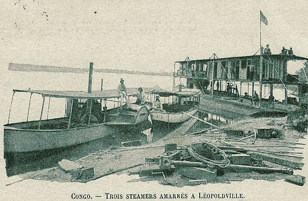
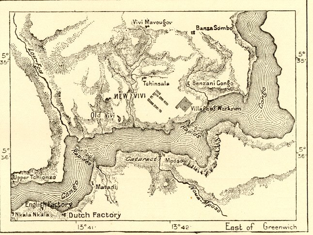

← 目次Joseph Conrad was not born with that name. He was born Józef Teodor Konrad Korzeniowski in 1857, in a Polish family living in what is now Ukraine. He went to sea as a young man, sailed for many years on French and British ships, and learned English as an adult.
In 1890 he was thirty-two and looking for a command. A Belgian company, the Société Anonyme Belge pour le Commerce du Haut-Congo, needed a captain for one of its steamers on the Congo River. Conrad was hired in Brussels by the company’s director, Albert Thys. A relative in Brussels, Marguerite Poradowska, helped him get the job. Conrad called her his “aunt,” and wrote her many letters about the journey.
On 10 May 1890 he left Bordeaux on a French steamer, the Ville de Maceió, and sailed down the west coast of Africa. At Matadi, on the lower river, he met an Irishman named Roger Casement. Years later, Casement would write a famous report on the cruelty in the Congo.

作者不詳（地図）, Vivi and Matadi on the Lower Congo, 19世紀／Public domain／Commons
Ships could not go further up the river from there, because of the rapids. So Conrad walked about two hundred miles with a caravan of porters to Stanley Pool, where the river becomes calm again. He kept a short diary of this walk, which we now call The Congo Diary. When he arrived, he found that the steamer he was supposed to command had been wrecked.
When he arrived, he found that the steamer he was supposed to command had been wrecked.
Instead, he joined a small steamer called the Roi des Belges, “the King of the Belgians,” going up the river to Stanley Falls. For part of the journey, when the captain was ill, Conrad took command of the boat. On the way back down the river, a sick company agent named Georges-Antoine Klein died on board. Many readers see in Klein one of the models for Kurtz.
Conrad himself became ill with fever and dysentery. He left Africa at the end of 1890 and was back in Brussels by late January 1891, after only about six months. Eight years later, he turned these months into Heart of Darkness. It came out in three parts in Blackwood’s Magazine in 1899. Marlow is not Conrad, but he walks in Conrad’s footsteps.
Eight years later, he turned these months into Heart of Darkness. It came out in three parts in Blackwood’s Magazine in 1899. Marlow is not Conrad, but he walks in Conrad’s footsteps.
英文と訳は本教材の自作です。年や数は上の資料で確かめました。